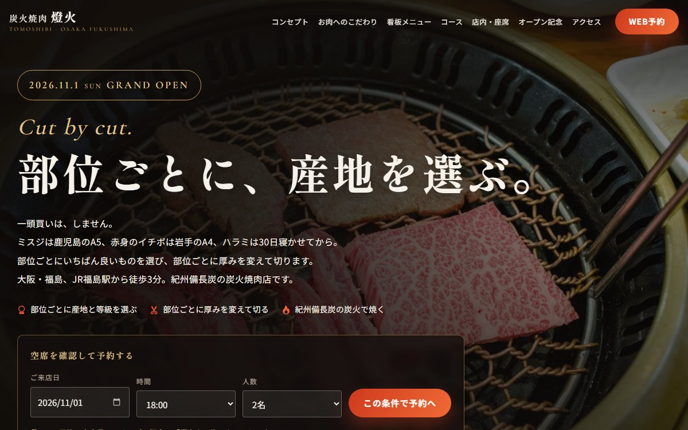
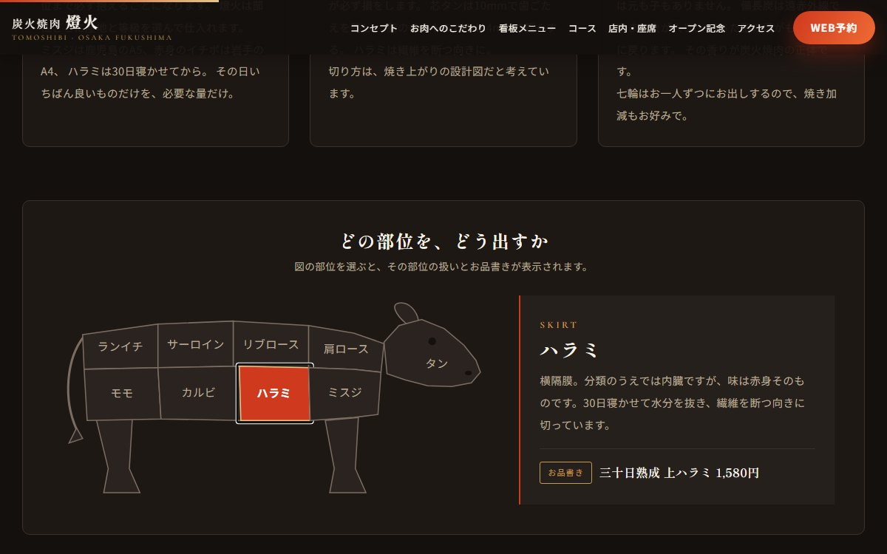
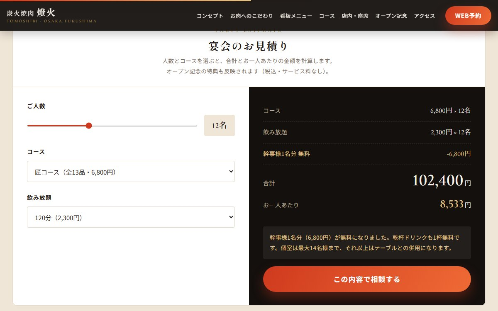

焼肉店（新規オープン）／ 静的ランディングページ
炭火焼肉 燈火
大阪・福島に新しくオープンする焼肉店の集客ページです。 実績も口コミもまだ無い状態で、どうやって初回の予約を取るかを主題にして作りました。



| 種別 | 焼肉店の新規オープン集客／架空の店舗を想定した自主制作 |
|---|---|
| 担当範囲 | 企画・構成・デザイン・実装・動作確認 |
| 使用技術 | HTML ／ CSS（BEM設計）／ JavaScript（ライブラリ不使用）／ インラインSVG |
| 規模 | 1ページ12セクション ／ 画像29点 ／ 自動確認30項目 |
オープン前の店には、載せられる実績が無い
飲食店のページで効くのは、普通なら口コミの点数、行列の写真、常連さんの声です。ところがオープン前の店にはそのどれも存在しません。開店してから集めるものなので、いちばん集客したい時期にいちばん武器が無い状態になります。
そこで、信頼してもらう材料を具体の細かさに置き換えました。「美味しい」ではなく「根元の芯タンだけを10mmに厚切り」「脂の多いトモバラは筋を外して4mm」「ハラミは30日寝かせてから繊維を断つ向きに切る」。食べたことがなくても、この店が何を考えているかは判断できます。
差別化は、肉そのもので言う
最初に作ったときは「一人に一台、七輪を。」を見出しに据えていました。設備としては珍しく、覚えてもらいやすい一言です。ところが読み返すと、ページの最前面に来ているのが備長炭と七輪の話で、肝心の肉が後ろに回っていました。
想定しているのは「美味しいお肉が好きな方」です。その人に向けて設備の話から始めるのは順番が違うと考え、見出しを「部位ごとに、産地を選ぶ。」に差し替えました。一頭買いをしないという逆張りを入口にして、ミスジは鹿児島のA5、赤身のイチボは岩手のA4、ハラミは30日といった具体で押しています。
こだわりの3本柱も「備長炭 → 切り方 → 部位買い」から「部位買い → 切り方 → 備長炭」に並べ替えました。炭火は最後の仕上げであって、話の入口ではありません。七輪は設備欄と3つ目のカードに残しています。
想定ターゲットに無いものは、載せない
利用シーンの4枚目に「ひとりで、軽く」を置いていましたが、想定ターゲットは友人・カップルでの食事と、会社の飲み会・宴会の幹事です。ひとり客は含まれていません。
七輪が一人一台という設備から発想して、そこから使い方をひねり出していたのが原因でした。作れる機能の側から考えると、狙っていない客層に枠を1つ使ってしまう。「接待・取引先との会食」に差し替え、個室と極コースへの導線にしています。
牛の部位図をSVGで描いた
「部位ごとに切り方を変える」という主張を文章だけで置くと通り過ぎられるので、牛のイラストを作り、9つの部位を選べるようにしました。画像を貼ったのではなく図形として描いているため、拡大しても輪郭が崩れず、配色もサイトのCSS変数から変えられます。
作るうえで面倒だったのは操作の受け付け方です。SVGの図形はボタンではないので、そのままではキーボードで選べません。役割の指定とキー操作を自分で書き足し、Enterとスペースでも選べるようにしています。スマートフォンでは図が小さくて指で押しづらいため、下に部位名のボタンを並べ、どちらからでも同じ動きになるようにしました。
幹事の「いくらになるか分からない」を先に潰す
宴会の予約で止まるのは、たいてい金額が読めないときです。人数・コース・飲み放題を選ぶと、合計とお一人あたりがその場で出る見積もりを料金表の真下に置きました。
ここで意識したのは、キャンペーンの条件を計算に反映することです。10名以上なら幹事1名分のコース料金が無料になるので、その行が現れて合計から引かれます。飲み放題は人数分いただくため、無料になるのはコース料金だけです。さらに人数によって「あと2名様で幹事様1名分が無料になります」と出し分け、人数の上積みを促しています。
コースの金額はページ内に3か所（料金表・キャンペーン・見積もり）出てきます。別々に書くとどこかがずれるので、JavaScript側の定数1つにまとめ、キャンペーンの適用人数も同じ場所に置きました。
作ったものが本当に動くか、ブラウザを動かして確かめた
数字が絡む部品が多いので、実際のブラウザを操作して結果を確認するスクリプトを書きました。手で毎回試すより確実で、直したときに他が壊れていないかも分かります。
| 確認した部分 | 件数 | 確かめていること |
|---|---|---|
| 見積もり | 10件 | 2・4・10・20名での合計と一人あたり、幹事1名無料の適用、案内文の4分岐 |
| 部位図 | 5件 | 説明とお品書きの入れ替え、図とボタンの選択状態が揃うこと、キーボード操作 |
| フォーム | 4件 | 未入力で送信されないこと、完了表示、送信後のリセット |
| カウントダウン | 3件 | 残り日数が実際の時刻差と一致すること、秒が進むこと |
| タブ | 3件 | 表示の切替、支援技術向けの属性の更新、左右キーでの移動 |
| 予約の導線 | 2件 | 最上部で選んだ日付・時間・人数がフォームに引き継がれること |
| ページ全体 | 3件 | ページ内リンクの飛び先が存在すること、全画像の代替テキスト、エラーが出ていないこと |
合計30件で、すべて通っています。このほか、パソコン幅とスマートフォン幅での全セクションの表示、29点の画像がすべて読み込めること、横スクロールが出ないことを目で確認しました。
つまずいた点：JavaScriptを切ったら、ページの半分が消えた
スクロールに合わせて要素を出す仕組みを使っているのですが、これは出す前の要素を透明にしておく作りです。JavaScriptが動かないと透明のままになり、こだわり・見積もり・予約フォームがまるごと見えなくなっていました。飲み物のメニューも、タブの中身として隠れたままでした。
備えとして目印になるクラスは付けていたのに、実際に切って開いたことがなかったのが原因です。透明化の打ち消し、3つのタブをすべて展開、カウントダウンをオープン日の表示だけに差し替える、の3つを足して直しました。用意したつもりの逃げ道は、通ってみるまで通れるか分からないと感じた箇所です。
つまずいた点：選んだ書体の数字が、価格表と相性が悪かった
和の雰囲気に合わせて選んだ欧文書体が、初期設定では数字の高さを揃えない作りでした。「1,780円」の1だけが小さく沈み、価格が縦に並ぶメニューで桁が揃って見えません。1秒ごとに書き換わるカウントダウンでは、数字の幅も変わるため左右に揺れていました。
高さの揃った数字に切り替える指定と、桁幅を固定する指定を入れて解決しています。書体を雰囲気だけで決めると、数字を多く扱うページで後から効いてくると分かりました。
つまずいた点：部位の名前を細かく書いたのに、写真がその部位ではなかった
「極上タンねぎ塩」の写真が、よく見るとサシの入った薄切り肉でした。牛タンは灰色がかっていてサシは入りません。同じように「上ハラミ」は脂の多い極薄スライス、「ミスジ」は「薄く引いて出します」と書いているのに写真は塊。看板メニュー4品のうち3品が、文章と一致していませんでした。
産地や寸法を数字で書くほど信用してもらえる、という方針で本文を組み立てたのに、その具体を裏切っていたのが自分の選んだ写真でした。文字だけを読み返しても気づけなかったので、写真を原寸で並べ、1枚ずつ説明文と突き合わせて洗い出しています。
本物の牛タン、繊維の粗さが見えるハラミ、中央の筋が見えるミスジの写真に差し替えました。写真にねぎが無かったため「極上タン塩」に改名し、ミスジは「厚めのひと口大」に説明のほうを直しています。「一頭買いをしない。部位で選ぶ」のカードも、塊が1つ写っているだけで主張と合っていなかったので、複数の部位が並ぶ写真に替えました。
写真は、合わないものを使わない判断も含めて選んだ
29点すべてフリー素材から選び、サイズごとに切り出しています。選ぶ過程では、マッコリのつもりで用意した写真が味噌の甕だったり、韓国焼酎の写真に実在する商品のラベルが読めたりしたため、いずれも差し替えました。架空の店のメニュー写真に実在の商品名が写っているのは不適切だと判断しています。
また、焼肉店で日本人が食事している写真は探した範囲では見つかりませんでした。利用シーンの4枚のうち人物が写っているのは2枚だけで、残りは席と店内の写真に替えています。無理に合わない写真を当てるより、席で語ったほうが情報としても具体的だと考えました。
実運用に足りていないもの
お見せするために作ったものなので、実際に開店するなら追加が必要です。予約フォームは送信処理を持たないデモで、実運用では確認メールの送信と予約台帳への登録が要ります。空席の確認も、いまは日付・時間・人数を受け取ってフォームに渡すだけで、実際に空いているかは見ていません。
集客ページとしては、Instagram広告からの流入を想定しているのでその計測、オープン後は口コミと実際の店内写真への差し替え、そしてカウントダウンの役目が終わったあとのファーストビューの差し替えが必要になります。オープン前のページは、オープンした時点で作り直す前提のものだと考えています。